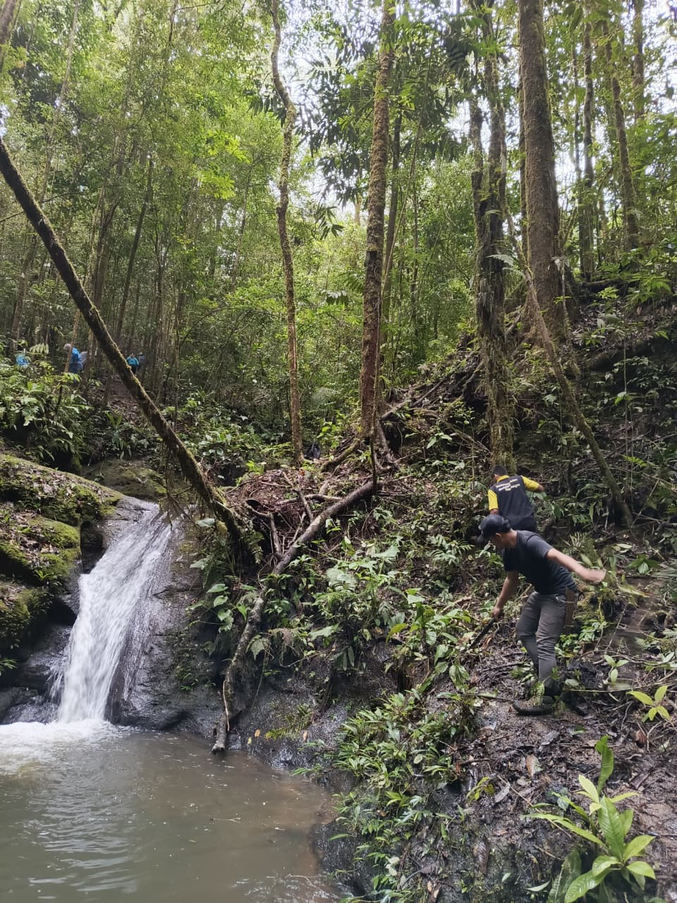
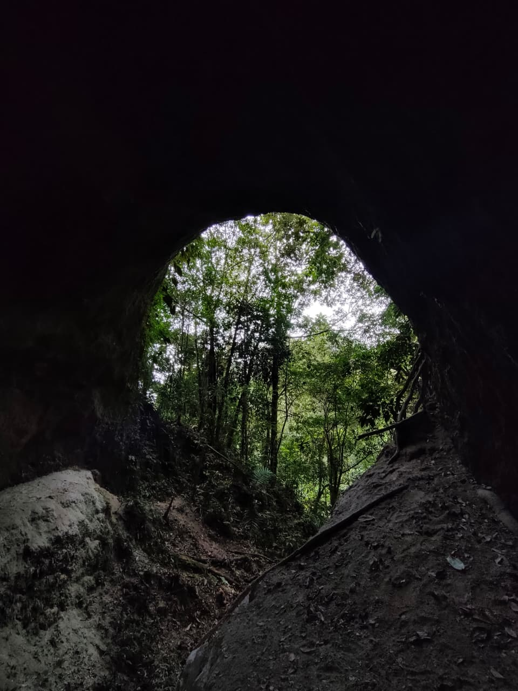
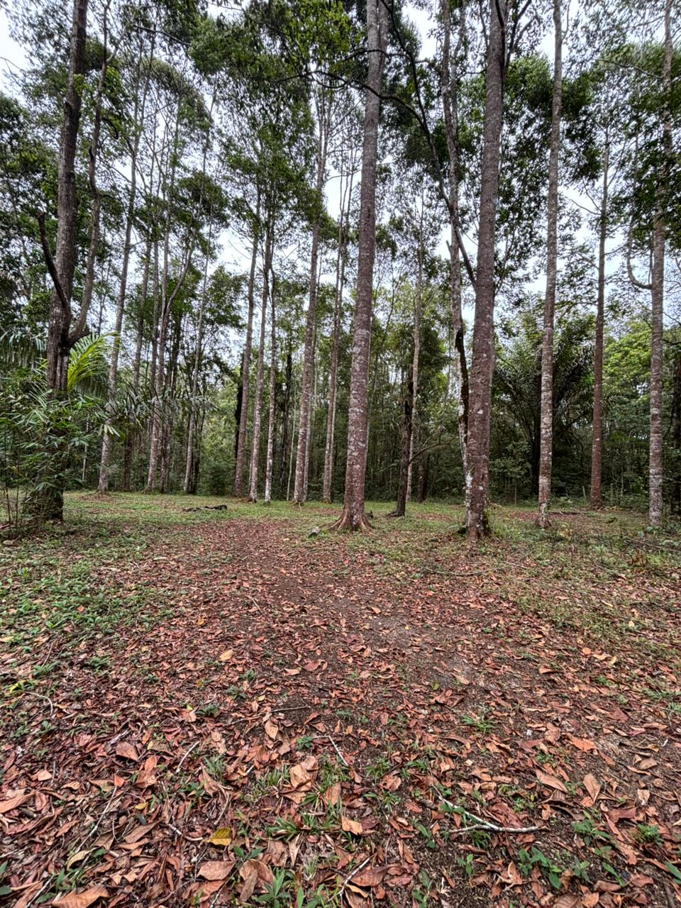

KHDTK Hutan Diklat Pondok Buluh
KHDTK Hutan Diklat Pondok Buluh merupakan kawasan hutan dengan fungsi khusus yang dimanfaatkan sebagai sarana pendidikan, pelatihan, penelitian, serta pengembangan ekowisata berbasis edukasi dan kelestarian lingkungan.
Kawasan KHDTK Hutan Diklat Pondok Buluh memiliki beberapa potensi ekowisata unggulan yang dapat dikembangkan sebagai sarana edukasi, rekreasi alam, dan pembelajaran konservasi.
Air terjun di kawasan ini menawarkan suasana alami dengan aliran air yang masih terjaga keasriannya. Dikelilingi vegetasi hutan yang lebat, lokasi ini cocok sebagai destinasi wisata alam, edukasi hidrologi, serta pengenalan ekosistem hutan.
Kawasan ini memiliki gua alami yang terbentuk secara geologis dan menjadi bagian dari keunikan bentang alam KHDTK Pondok Buluh. Gua dapat dimanfaatkan sebagai media edukasi geologi, sejarah alam, serta wisata minat khusus dengan tetap memperhatikan aspek keselamatan dan kelestarian lingkungan.
Area camping ground tersedia di lokasi yang relatif datar dan aman, dikelilingi tegakan pohon hutan yang memberikan suasana sejuk dan alami. Area ini cocok untuk kegiatan perkemahan, pelatihan, pendidikan karakter, serta kegiatan luar ruang berbasis konservasi.
*Foto dapat diganti dengan dokumentasi kegiatan
Pengelola: Balai P2SDM Wilayah I
Email: info@pondokbuluh.go.id
Telepon: (+62) 82219726951